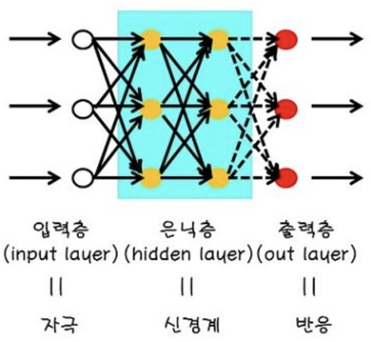
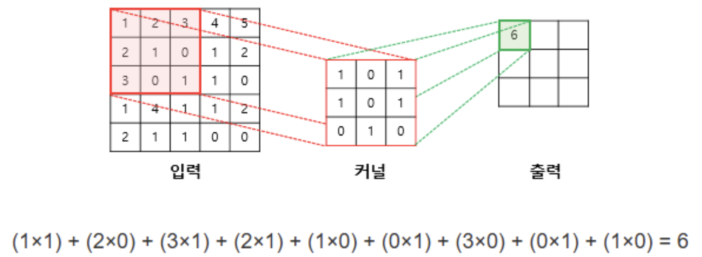
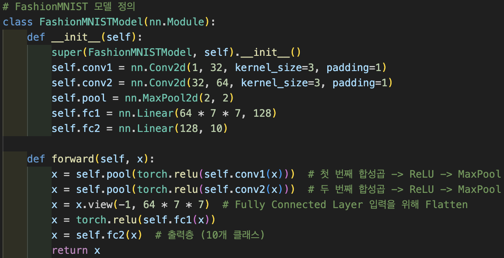
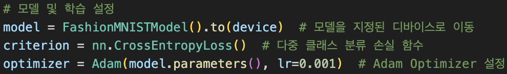
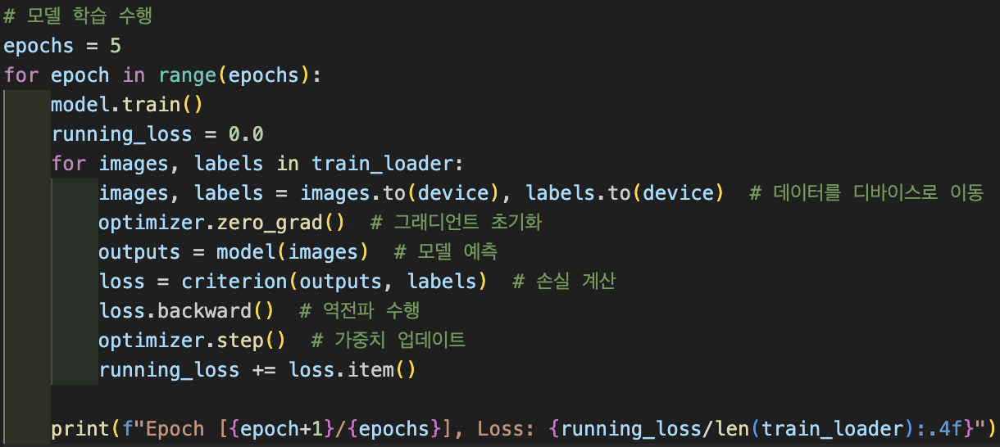

Deep-Learning
"딥러닝(deep-learning)"은 사람의 두뇌 구조를 모방한 인공신경망(Artificial Neural Networks)을 사용하여
데이터를 학습하고 복잡한 문제를 해결하는 기술입니다.
스스로 데이터에서 특징을 찾아내 예측, 분류, 생성 등의 작업을 수행할 수 있는 알고리즘이라 할 수 있습니다.
입력층, 은닉층, 출력층으로 구성된 인공신경망을 통해 데이터에서 중요한 특징을 스스로 학습하고,
많은 양의 데이터와 강력한 하드웨어(GPU, TPU)가 필요합니다.
대규모 연산을 통해 더 높은 정확도를 달성할 수 있습니다.
Clothing Type Prediction
1. 프로젝트 소개
'FashionMNIST' 데이터셋을 활용하여 주어진 이미지가 어떤 종류의 옷인지 파악하게 합니다.
| 개발 기간 및 과정 |
2025.03 ~ 현재진행형 1. 계획 수립 2. 합성곱 신경망 모델 정의 3. FashionMNIST 모델 정의 4. 모델 및 학습 설정 5. 모델 학습 수행 6. 이미지 예측 함수 정의 7. 포트폴리오 제작 |
|---|---|
| 개발 인원 | 박성수: 전체 프로젝트 기획 및 개발 |
| 기술 스택 및 개발 환경 |
기술 스택: Python, Pytorch, Deep Learning 소프트웨어: Visual Studio Code |
| 깃허브 주소 | https://github.com/parkss1324/DL_Python_Project |
2. 합성곱 신경망 모델 정의
합성곱(Convoluion)
개발자가 고양이가 어떤 것을 보는지에 따라 뇌 자극 부위가 달라지는 것을 참고하여 개발되었습니다.
이미지 전체가 아닌 '부분(Filter)'을 보는 방법을 고안했고, 필터가 이동할 때마다 가중치(Weight)를 곱하여 새로운 값을 만들어냈습니다.
이를 합성곱이라고 합니다.
합성곱
신경망(Neural Network)
신경망은 여러 개의 뉴런(Neuron, 가중치와 편향으로 구성)이 층을 이루며 서로 연결된 구조를 가집니다.
이 층은 입력층, 은닉층, 출력층으로 구성되어 있습니다.
신경망 구조
합성곱 신경망
합성곱 신경망(CNN, Convolutional Neural Network)은 이미지나 영상을 처리하는 데 특화된 신경망으로,
필터를 사용하여 이미지의 중요한 패턴(모서리, 선, 색상 변화 등)을 감지합니다.
패턴과 특징을 자동으로 학습하여 이미지 분류, 객체 탐지, 스타일 변환 등 다양한 작업에 활용됩니다.
합성곱 신경망 계산 예
3. FashionMNIST 모델 정의
이미지를 예측하기 위해 신경망을 구성하는 단계입니다.
1) Conv2d(in_channels, out_channels, kernel_size, padding): 합성곱 계층을 정의합니다.
2) MaxPool2d(kernel_size, stride): 풀링 계층을 정의합니다.
3) Linear(in_features, out_feature): 뉴련을 변환시켜 완전연결층을 구성합니다.
4) relu(): ReLU 활성화 함수를 사용하여 비선형성을 추가, 학습 성능을 향상시킵니다.
모델 정의
4. 모델 및 학습 설정
모델을 GPU로 이동시키고 추가적인 기능을 설정합니다.
1) CrossEntropyLoss(): 다중 클래스 분류에서 가장 많이 쓰이는 손실 함수입니다. 정답 클래스의 확률을 높이도록 학습합니다.
2) Adam(model.parameters(), lr): 대부분의 딥러닝 모델에서 기본 옵티마이저로 쓰입니다. 학습 속도를 가속하고, 적절한 학습률을 자동으로 조절합니다.
학습 설정
5. 모델 학습 수행
epoch는 데이터셋을 한 번 모두 학습한 것을 의미합니다.
epoch를 5로 설정하여 5번의 학습 과정을 수행합니다.
과정을 거칠수록 손실이 줄어드는 것을 확인할 수 있습니다.
모델 정의
출력 결과
6. 이미지 예측 함수 정의
이미지 예측 함수를 정의하여 주어진 이미지가 어떤 종류의 옷인지 예측하게 합니다.
테스트 이미지

출력 결과
7. 느낀 점(회고)
| 머신 비전 분야에 대한 호기심 |
머신 비전 분야는 미래 산업에서 눈과 같은 역할을 합니다. 대상의 움직임을 인식하여 판단하는 관련 영상들을 보며 이 기술을 활용하는 개발자가 되고 싶었습니다. C++, Python, OpenCV 등의 언어와 소프트웨어를 익히고 포트폴리오를 만들면서 더 다양한 라이브러리를 사용해보고 싶은 욕심이 생겼습니다. |
|---|---|
| 사용 분야의 범위 응용 |
손을 인식하여 그림을 그리는 코드를 만들었지만 이 코드를 다양하게 변경시켜서 응용이 가능합니다. 임베디드 분야와 결합하여 로봇의 팔을 움직이게 만들 수도 있고, 애플 비전과 같은 증강 현실에서 손의 제스처로 음량을 줄이거나, 화면을 커지게 하는 부가적인 기능을 수행할 수도 있습니다. |
| 개발 가능 영역의 확장 |
임베디드, 프론트엔드에 이어 머신비전 포트폴리오를 만들면서 개발에 대한 영역을 확장시킨 보람있는 순간이었습니다. mediapipe에서 손과 관련된 모듈을 사용하였지만, 전신을 랜드마크로 하는 pose 객체를 이용하여 특정 자세를 인식하여 결과를 출력하는 프로그램도 만들 계획입니다. 또한 동영상에서 mediapipe를 적용시켜 사람을 인식하거나, 객체를 추적하는 소스 코드도 만들 계획입니다. |